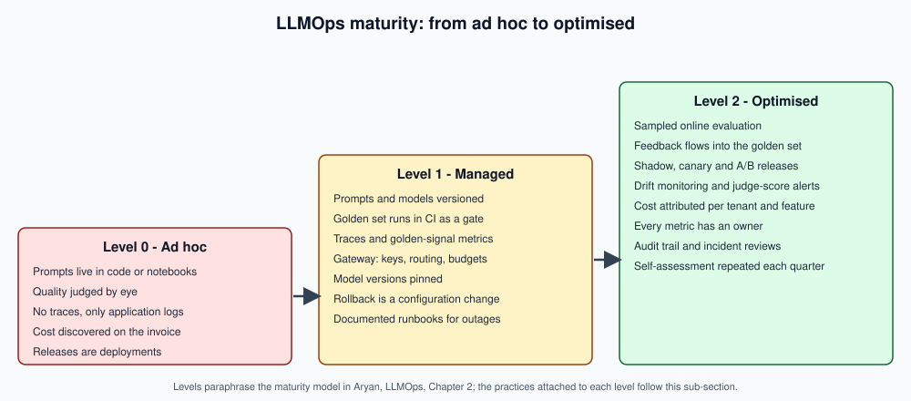

LLMOps & Evaluation
|
This content was generated with the assistance of AI and should be verified against the official documentation before being relied on in production. |
This sub-section was written on 2026-10-01 against vLLM 0.30.0, SGLang 0.5.21, KServe 0.21.0, LiteLLM 1.103.2, MLflow 3.16.1,
Langfuse 4.49.0 (Python SDK 4.16.0), LangSmith SDK 0.14.2 with openevals 0.2.0 and agentevals 0.0.9, Arize Phoenix
20.18.0, RAGAS 0.4.3, DeepEval 4.2.7, OpenTelemetry Python 1.45.0 with OpenLLMetry (traceloop-sdk) 0.62.4, the OpenTelemetry
GenAI semantic conventions at Development stability (registry schema gen-ai-dev/1.42.0-dev, built on semantic conventions
1.44.0), Spring AI 2.0.1 on Spring Boot 4.1.x with Java 21, LangChain 1.4.3 on Python 3.12, Prometheus 3.15.0 and Grafana
13.2.3; the full list is in the version baseline below. Versions were read from PyPI, Maven Central,
GitHub releases and each project’s own documentation on that date. The code on the pages is illustrative: it is written from
the official documentation of each tool and is not compiled by this repository, and the serving and observability stack
(vLLM, Langfuse, Grafana) could not be started here, so each page says in its lead paragraph which snippets were documented
from official documentation only. No benchmark numbers or vendor prices are quoted; pages give methods and a load-test harness
instead.
Building an LLM application is the easy half. The RAG Systems in Production and AI Agents sub-sections show how to build one that works on a good day. This sub-section is about the other half: knowing whether it still works next week, after a prompt edit, a model update or a change of chunking; serving it at a predictable latency and cost; releasing changes without surprising users; and finding out why an answer went wrong.
What LLMOps is
LLMOps is the set of practices that take an LLM-based application from a working prototype to a service that is measured, repeatable, observable and affordable. It covers five concerns that recur on every page:
-
Evaluation. Turning "the answers look fine" into numbers that can fail a build: component and system evals, metrics, judges, golden sets, CI gates, and sampled evaluation of live traffic.
-
Serving. Running models, your own or a provider’s, behind a stable interface with predictable latency, throughput and failure behaviour.
-
Release engineering. Versioning prompts and models separately from code, and shipping changes through shadow, canary and A/B stages with a rollback path.
-
Observability. Traces, metrics and logs that explain a single bad answer and show the health of the whole fleet, using the OpenTelemetry GenAI conventions so that tools are interchangeable.
-
Cost and governance. Token budgets, attribution, prompt and model registries, data operations, roles, runbooks and an audit trail.
LLMOps, MLOps and DevOps
LLMOps inherits DevOps (pipelines, infrastructure as code, monitoring) and MLOps (datasets, experiments, model registries), but several assumptions of both stop holding:
| Aspect | DevOps | MLOps | LLMOps |
|---|---|---|---|
The artefact that changes |
Code and configuration. |
Code, data and a trained model. |
Code, prompts, retrieval indexes, tool definitions and a model you usually did not train, which a vendor may change under you. |
What "correct" means |
Deterministic tests pass. |
A metric on a labelled test set clears a threshold. |
Open-ended text has many acceptable answers; correctness is estimated with rubrics, judges and human samples. |
Regression risk |
A commit. |
Retraining or data drift. |
A prompt edit, a vendor model update, a new chunking strategy or a changed tool description. |
Unit of cost |
Compute time. |
Training and serving compute. |
Tokens in and out per request, multiplied by traffic, which a loop in an agent can multiply further. |
Feedback signal |
Alerts and incidents. |
Ground-truth labels, often delayed. |
Thumbs, edits, regenerations and judge scores, noisy and biased but immediate. |
Concepts in this table, and the maturity levels below, are paraphrased from Chapter 2 of Aryan’s LLMOps; the bibliography lists it with the other books.
The lifecycle loop
Every page fits one step of a loop that never ends, because the model, the data and the users all keep moving:
prompts, retrieval, tools] --> E[Evaluate
offline: golden set, judges] E --> D[Deploy
gateway, shadow, canary] D --> O[Observe
traces, metrics, cost] O --> I[Improve
feedback, drift, new cases] I --> B O -.->|sampled live traffic| E
Building is covered by the sibling sub-sections. Evaluate starts with Evaluation Methodology and ends in Evaluation in CI; deploy is Serving at Scale and Deployment and Release Patterns; observe is Observability with OpenTelemetry and its neighbours; improve is Online Evaluation and Feedback and Drift and Regression Monitoring.
The maturity model
A useful way to decide what to do next is to ask which level your team is at. The levels below follow the three-step model described in Aryan’s LLMOps (Chapter 2: ad hoc, managed and optimised), with the practices attached to each level taken from this sub-section’s pages.

Moving from level 0 to level 1 is mostly the evaluation pages plus a gateway; moving from level 1 to level 2 is mostly online evaluation, drift monitoring and governance. Aryan assesses each level against the same five measures — how well the system is documented, which KPIs are tracked, how risk is handled, how cost is controlled and how the API is documented — so a level is a profile across all five rather than a single feature; use the self-assessment checklist on Operational Governance to place your system.
The running scenario: DocsAssistant in production
Every page uses the DocsAssistant introduced in the RAG Systems sub-section, now treated as a production service. Its core operation is the channel-agnostic one used by the other sub-sections, described on Serving RAG as an API:
ask(conversationId, userId, text) -> stream of { token | citation | done }Around that core, the pages build the operating environment:
-
a golden evaluation set built from the site’s own pages and from real questions, versioned like code;
-
CI gates that run the set on every change to a prompt, a model, the chunking or the index;
-
a vLLM or Ollama serving tier behind a LiteLLM gateway that handles keys, routing, fallbacks and budgets;
-
OpenTelemetry traces sent to Langfuse and to Prometheus and Grafana for dashboards and alerts;
-
sampled online judging of live answers and a feedback widget in the documentation page;
-
a monthly cost report attributed per tenant and feature.
Python covers the evaluation tooling (RAGAS, DeepEval, openevals, MLflow, the Langfuse SDK and the OpenTelemetry SDK), Java
covers Spring AI evaluators, Micrometer and JUnit gates, and configuration is YAML (GitHub Actions, Prometheus rules, vLLM and
LiteLLM). Every snippet is followed by a link to the official page it derives from.
Version baseline
Every version below was read on 2026-10-01 from PyPI, Maven Central, GitHub releases or the project’s own documentation. Each page repeats the subset it uses in its lead paragraph; if a page and this table ever disagree after an update, this table wins.
| Area | Versions and status |
|---|---|
Serving engines |
vLLM 0.30.0 (Apache-2.0, released 2026-09-22) and SGLang 0.5.21 on PyPI (Apache-2.0; latest GitHub release tag v0.5.20). Hugging Face Text Generation Inference 3.3.7 is the last release (2025-12-19) and its README states the project is in maintenance mode; new deployments should prefer vLLM or SGLang. KServe 0.21.0 (Apache-2.0, 2026-09-25) is the Kubernetes serving layer. |
Gateway |
LiteLLM 1.103.2 (proxy server documented under |
MLflow |
MLflow 3.16.1 (Apache-2.0). The GenAI documentation covers tracing, LLM-as-a-judge scorers, a prompt registry and OpenTelemetry compatibility with native support for the GenAI semantic conventions. |
Langfuse |
Platform release 4.49.0 and Python SDK 4.16.0 (MIT). The repository licence file states that everything outside the
|
LangSmith evaluators |
|
Arize Phoenix |
|
Evaluation libraries |
RAGAS 0.4.3 (Apache-2.0) and DeepEval 4.2.7 (Apache-2.0). |
Evaluation metrics libraries |
|
Scientific Python |
NumPy 2.5.3, SciPy 1.18.1 ( |
OpenTelemetry |
OpenTelemetry Python API and SDK 1.45.0 (instrumentation packages at 0.66b0 and |
Spring AI |
2.0.1 through |
LangChain |
|
Metrics and dashboards |
Prometheus 3.15.0 and Grafana 13.2.3. |
Autoscaling |
KEDA 2.21.0 (Apache-2.0, released 2026-09-23; |
CI |
GitHub Actions workflow syntax current on 2026-10-01 with |
Where the books are out of date
The requester-provided books are used for concepts only; where they differ from current tooling, the pages follow the official documentation:
-
Serving. LLMOps (Aryan) leans on Jenkins and Triton-centred practice; current stacks use GitHub Actions with vLLM, SGLang and KServe, and TGI is in maintenance mode.
-
Experiment tracking and evaluation. MLflow 3 now covers GenAI tracing, scorers, judges and a prompt registry; LangSmith judges come from
openevalsandagentevalsrather than judge prompts pulled from the Hub; Langfuse is self-hostable and OpenTelemetry-based. -
Observability conventions. The
gen_ai.*conventions post-date the books, are still at Development stability, and moved to their own repository. -
Benchmarks. The Hugging Face Open LLM Leaderboard is retired and MMLU is saturated; evaluation centres on task-specific evals, arenas and agent evals.
-
Spring AI. Spring AI in Action targets Spring AI 1.0; the pages use the 2.0.1 evaluator and observability APIs.
What’s covered
Evaluation
-
Evaluation Methodology — why open-ended evaluation is hard, component and system evals, pass@k, perplexity, lexical and semantic metrics, and when each misleads.
-
LLM-as-a-Judge — rubrics, pointwise and pairwise judging, biases, calibration with Cohen’s kappa, and judges in
openevals, MLflow 3 and Spring AI. -
Comparative Evaluation and Arenas — pairwise preference, Elo, Bradley-Terry, internal A/B arenas and sample sizes.
-
Building Eval Sets — golden sets from traffic and docs, synthetic data, coverage, versioning and labelling.
-
RAG and Agent Evaluation — reference-free RAG metrics, trajectory and tool-call evals for agents.
-
Evaluation in CI — regression gates in GitHub Actions, thresholds, flakiness, judge-call caching and JUnit gates.
-
Online Evaluation and Feedback — sampled judging, explicit and implicit feedback, feedback loops and Thompson sampling.
Serving and deployment
-
Serving at Scale — vLLM and SGLang in production, batching, KV cache, parallelism, autoscaling and a load-test harness.
-
Deployment and Release Patterns — API-first design, gateways, versioning, shadow, canary and A/B releases, and rollback.
Observability
-
Observability with OpenTelemetry — the GenAI semantic conventions, instrumentation in Python and Spring AI, and trace context through MCP.
-
Observability Platforms — LangSmith, Langfuse, MLflow 3, Arize Phoenix and Grafana, compared.
-
Metrics, Dashboards and Alerting — golden signals, Prometheus rules, Grafana dashboards and SLOs.
-
Drift and Regression Monitoring — vendor model updates, input and output drift, periodic regression runs.
Cost and governance
-
Cost Management — the token-cost model, caching, routing, budgets and attribution.
-
Prompt and Model Management — registries, approvals, allow-lists and reproducibility.
-
Data Operations — the preprocessing pipeline, lineage, PII, index freshness and backups.
-
Operational Governance — roles, runbooks, audit trail and the maturity self-assessment.
Cheat sheet
-
Cheat Sheet (PDF) — a one-page A4 summary.
Security testing, red teaming and regulations belong to AI Security & Responsible AI, engine installation belongs to Running LLMs Locally, fine-tuning pipelines belong to Hugging Face & On-Device Models, and vendor price figures are linked rather than quoted.
Reading path
Read the pages in navigation order on a first pass. Shorter paths for a specific goal:
"I need to know whether my change made things worse"
-
LLM-as-a-Judge for open-ended answers.
-
Evaluation in CI to turn it into a gate.
"I need to run models myself"
-
Running LLMs Locally for engine basics, then Serving at Scale.
-
Deployment and Release Patterns for the gateway and rollouts.
-
Cost Management for the self-hosting break-even method.
"Something is wrong in production and I cannot see why"
"I own the budget or the risk"
Bibliography
The following sources were consulted while preparing the pages of this sub-section. Every code example was written from the
current official documentation of the tool it uses — never copied from a book. All links below were requested on 2026-10-01
and resolved, except the oreilly.com publisher pages and the oreil.ly supplement link, which answer automated fetches with
an HTTP 403 response; the DOI links resolve to the publisher’s page, some of which (Taylor & Francis) also answer automated
fetches with HTTP 403.
Requester-provided books
Their text and code are not reproduced; concepts are paraphrased and credited on the page that uses them. No book PDF is committed or attached to this repository.
-
Aryan, Abi. LLMOps: Managing Large Language Models in Production. O’Reilly Media, 1st ed., July 2025. ISBN 978-1-098-15420-2. Publisher page: https://www.oreilly.com/library/view/llmops/9781098154196/. No official code repository; supplementary material: https://oreil.ly/LLMOps. Attribution note: the copyright page reads "(c) 2025 Abi Aryan and MeyerPerin Inc." and Lucas Meyer appears only in the acknowledgments, so this bibliography cites Abi Aryan as the author. Chapters consulted: 2 (maturity model), 3, 4, 6, 7, 8 and 9.
-
Huyen, Chip. AI Engineering: Building Applications with Foundation Models. O’Reilly Media, December 2024. ISBN 978-1-098-16630-4. Publisher page: https://www.oreilly.com/library/view/ai-engineering/9781098166298/. Official code repository: https://github.com/chiphuyen/aie-book. Chapters consulted: 3, 4, 9 and 10.
-
Albada, Michael. Building Applications with AI Agents. O’Reilly Media, September 2025. ISBN 978-1-098-17650-1. Publisher page: https://www.oreilly.com/library/view/building-applications-with/9781098176495/. Official code repository: https://github.com/michaelalbada/BuildingApplicationsWithAIAgents. Chapters consulted: 9, 10 and 11.
-
Mendelevitch, Ofer, and Forrest Sheng Bao. Hands-On RAG for Production. O’Reilly Media, May 2026. ISBN 979-8-341-62171-8. Publisher page: https://www.oreilly.com/library/view/hands-on-rag-for/9798341621701/. Official code repository: https://github.com/ofermend/hands-on-rag. Chapters consulted: 4 and 6.
-
Oshin, Mayo, and Nuno Campos. Learning LangChain. O’Reilly Media, 2025. ISBN 978-1-098-16728-8. Publisher page: https://www.oreilly.com/library/view/learning-langchain/9781098167271/. Official code repository: https://github.com/langchain-ai/learning-langchain. Chapter 10 (testing and evaluation with LangSmith) consulted.
-
Walls, Craig. Spring AI in Action. Manning Publications, 2026. ISBN 978-1-63343-611-4. Publisher page: https://www.manning.com/books/spring-ai-in-action. Official code repository: https://github.com/habuma/spring-ai-in-action-samples. Chapters 2 (evaluators) and 9 (observability) consulted.
oreilly.com answers automated fetches with an HTTP 403 response, but the publisher pages above are live pages when opened
in a browser.
Official documentation
Evaluation tools
-
RAGAS: https://docs.ragas.io/
-
openevals: https://github.com/langchain-ai/openevals -
agentevals: https://github.com/langchain-ai/agentevals -
LangSmith evaluation: https://docs.langchain.com/langsmith/evaluate-llm-application
-
MLflow GenAI: https://mlflow.org/docs/latest/genai/
-
Spring AI testing and evaluators: https://docs.spring.io/spring-ai/reference/api/testing.html
-
Spring AI LLM-as-a-judge guide: https://docs.spring.io/spring-ai/reference/guides/llm-as-judge.html
Observability platforms
-
Langfuse: https://langfuse.com/docs
-
Arize Phoenix: https://arize.com/docs/phoenix
-
LangSmith observability: https://docs.langchain.com/langsmith/observability
-
Spring AI observability: https://docs.spring.io/spring-ai/reference/observability/index.html
Serving and gateway
-
vLLM: https://docs.vllm.ai/
-
SGLang: https://docs.sglang.io/
-
LiteLLM proxy: https://docs.litellm.ai/docs/simple_proxy
Metrics and alerting
-
Prometheus: https://prometheus.io/docs/
-
Grafana: https://grafana.com/docs/
Specifications and standards
-
OpenTelemetry GenAI semantic conventions: https://opentelemetry.io/docs/specs/semconv/gen-ai/ (this page now only points to the dedicated repository)
-
The conventions repository: https://github.com/open-telemetry/semantic-conventions-genai
-
OpenTelemetry GenAI observability blog post: https://opentelemetry.io/blog/2026/genai-observability/
-
W3C Trace Context: https://www.w3.org/TR/trace-context/
-
Model Context Protocol specification: https://modelcontextprotocol.io/specification/
-
NIST AI Risk Management Framework: https://www.nist.gov/itl/ai-risk-management-framework
-
Regulation (EU) 2024/1689 (Artificial Intelligence Act), official text on EUR-Lex: https://eur-lex.europa.eu/eli/reg/2024/1689/oj
Papers and engineering articles
Evaluation metrics and judging
-
Chen et al., Evaluating Large Language Models Trained on Code (HumanEval, pass@k): https://arxiv.org/abs/2107.03374
-
Papineni et al., BLEU: a Method for Automatic Evaluation of Machine Translation (ACL 2002): https://aclanthology.org/P02-1040/
-
Lin, ROUGE: A Package for Automatic Evaluation of Summaries (ACL Workshop 2004): https://aclanthology.org/W04-1013/
-
Post, A Call for Clarity in Reporting BLEU Scores (SacreBLEU, WMT 2018): https://aclanthology.org/W18-6319/
-
Zhang et al., BERTScore: https://arxiv.org/abs/1904.09675
-
Zheng et al., Judging LLM-as-a-Judge with MT-Bench and Chatbot Arena: https://arxiv.org/abs/2306.05685
-
Liu et al., G-Eval: https://arxiv.org/abs/2303.16634
-
Shankar et al., Who Validates the Validators? Aligning LLM-Assisted Evaluation of LLM Outputs with Human Preferences: https://arxiv.org/abs/2404.12272
-
Es et al., RAGAS: Automated Evaluation of Retrieval Augmented Generation: https://arxiv.org/abs/2309.15217
-
Yao et al., tau-bench: A Benchmark for Tool-Agent-User Interaction in Real-World Domains: https://arxiv.org/abs/2406.12045
Arenas and pairwise comparison
-
Chiang et al., Chatbot Arena: An Open Platform for Evaluating LLMs by Human Preference: https://arxiv.org/abs/2403.04132
-
Bradley, R. A., and Terry, M. E. (1952). Rank analysis of incomplete block designs: I. The method of paired comparisons. Biometrika 39(3/4): doi:10.2307/2334029
-
Hunter, D. R. (2004). MM algorithms for generalized Bradley-Terry models. The Annals of Statistics 32(1): doi:10.1214/aos/1079120141
Online experimentation
-
Russo et al., A Tutorial on Thompson Sampling: https://arxiv.org/abs/1707.02038
-
Agrawal and Goyal, Analysis of Thompson Sampling for the Multi-armed Bandit Problem: https://arxiv.org/abs/1111.1797
Statistics and drift
-
Wilson, E. B. (1927). Probable inference, the law of succession, and statistical inference. Journal of the American Statistical Association 22(158): doi:10.1080/01621459.1927.10502953
-
Lin, J. (1991). Divergence measures based on the Shannon entropy. IEEE Transactions on Information Theory 37(1): doi:10.1109/18.61115
-
NIST/SEMATECH e-Handbook of Statistical Methods (control charts): https://www.itl.nist.gov/div898/handbook/pmc/section3/pmc31.htm
Serving
-
Kwon et al., Efficient Memory Management for Large Language Model Serving with PagedAttention: https://arxiv.org/abs/2309.06180
-
Zheng et al., SGLang: Efficient Execution of Structured Language Model Programs: https://arxiv.org/abs/2312.07104
-
Zhong et al., DistServe: Disaggregating Prefill and Decoding for Goodput-optimized Large Language Model Serving: https://arxiv.org/abs/2401.09670
Operations and governance
-
Google, Site Reliability Engineering (the SRE Book): https://sre.google/sre-book/table-of-contents/ — chapters on monitoring distributed systems, managing incidents and postmortem culture.
-
Google, The Site Reliability Workbook: https://sre.google/workbook/table-of-contents/ — in particular Implementing SLOs and Alerting on SLOs.
-
Mitchell et al., Model Cards for Model Reporting (FAT* 2019): https://arxiv.org/abs/1810.03993
These books are consulted references, not the primary source of any example anywhere in this section; on any discrepancy the official documentation of the tool or framework in question is authoritative.
References
-
RAG Systems in Production — the DocsAssistant this sub-section operates, and Serving RAG as an API for its
askoperation. -
Running LLMs Locally — engine installation and basics.
-
Langfuse documentation and Langfuse repository (licence)
-
openevalsandagentevals -
Arize Phoenix repository (Elastic License 2.0)
-
OpenTelemetry — GenAI semantic conventions and
semantic-conventions-genai -
Spring AI — Observability and Spring AI — Testing and evaluators
-
Text Generation Inference repository (maintenance-mode notice)